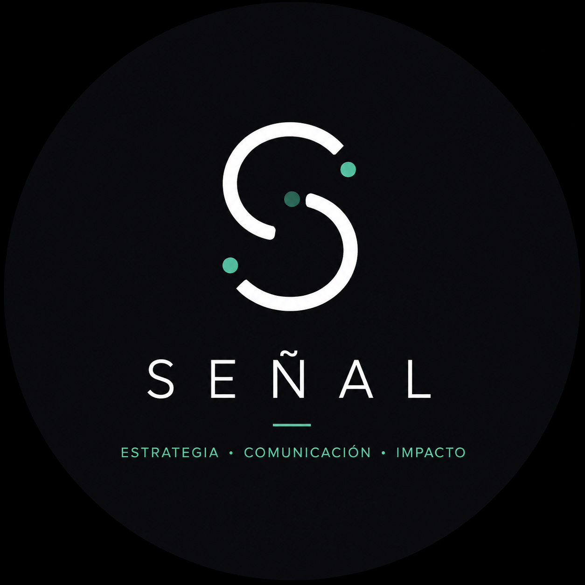

Diagnóstico político digital
Radiografía de presencia, contenidos, posicionamiento, audiencias, riesgos y oportunidades
Plan de acción de 30 días
SEÑALConsultoría política digital
Combinamos estrategia, inteligencia digital e innovación para convertir información dispersa en decisiones claras para dirigentes, gobiernos e instituciones
Detectar lo que está cambiando antes de que se vuelva evidente
Información que se transforma en acción
Trabajamos con dirigentes, equipos de gobierno, instituciones, ONGs y organizaciones que necesitan comprender mejor su entorno y decidir con menos intuición
Radiografía de presencia, contenidos, posicionamiento, audiencias, riesgos y oportunidades
Plan de acción de 30 díasLectura de conversación, agenda pública, tendencias y señales que ayudan a anticipar escenarios
Datos para decidirDefinición de mensajes, prioridades, contenidos y criterios para una comunicación consistente
Claridad y direcciónAutomatización, asistentes y herramientas que fortalecen procesos sin reemplazar la estrategia
Innovación con propósitoMétodo SEÑAL
Una primera lectura
Elegí tu contexto, objetivos y desafíos. Vas a recibir una orientación inicial con una prioridad estratégica y próximos pasos posibles
Prioridad estratégica
Segundo foco
Próximos pasos
Esta orientación no promete resultados electorales ni reemplaza un diagnóstico integral. Se basa únicamente en las respuestas seleccionadas
Gracias por contactar a SEÑAL. Te responderemos al correo que indicaste para coordinar los próximos pasos